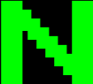
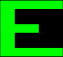
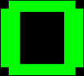
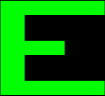
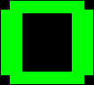

 



ESTUDIOS Y CONOCIMIENTO
- Estuidos básicos hasta duodecimo grado en Central West Junior High y posteriormente en Owen Paterson High
- Graduado en Ingenieria infórmatica en Tokyo Institute of Technology
- Polivalente en muchos entornos y lenguajes de programación
- Master de Cyberseguridad en la URJC
- Sobresaliente número de horas acumuladas en simulaciones y en Matrix
- Conocimiento de combate avanzado, manejo de un gran avanico de artes marciales, armas y vehículos de combate
- Mente liberada, obteniendo como consecuencia un poder sobre mí y mi entorno sin precedentes, únicamente limitado por mi imaginación, tanto en Matrix como en el Mundo Real
- Utilizo el Japonés, Inglés, Español y la Lengua de Sión
EXPERIENCIA LABORAL
Como programador empecé como autónomo ayudando a empresas en labores de ciberseguridad soldando las brechas y ataques que atentaban contra ellas.
Tiempo despues una empresa contactó conmigo, Metacortex, en ella trabajé reforzando todo el software y programas que utilizaban.
Tras años de rutina en Matrix, fui liberado del yugo de las máquinas, ingresé en la Nebuchadnezzar, bajo el mando de Morfeo, formando así parte del ejercito que convatiría a las máquinas.
Entrené con progrmas de simulación para adaptarme a Matrix, afrontando posteriormente misiones en ella. Alcancé nuevas cotas, mi mente se liberó por completo y la profecía se cumplió,
convirtiendome oficialmente así para el pueblo de Sion en "El Elegido", Un simbolo para combatir a las máquinas y poner fin a Matrix.
Posteriormente, hasta el dia de hoy, me encargo de liberar mentes, hemos logrado junto con la tripulación y el resto de enviados liberar mas de un millar,
consiguiendo en el proceso destruir infinidad de agentes y programas que atentan en contra de la libertad de la raza humana.
ASPIRACIONES
Mi objetvo es liberar a la humanidad de la opresión de las maquinas y llegar a la fuente para acabar con Matrix. Busco que los habitantes de Sion y aquellos esclavizados tengan un futuro próspero, para ello, seguiré luchando cada día con todas mis fuerzas,liberando mentes, destruyendo agentes y máquinas hasta lograr mi objetivo.